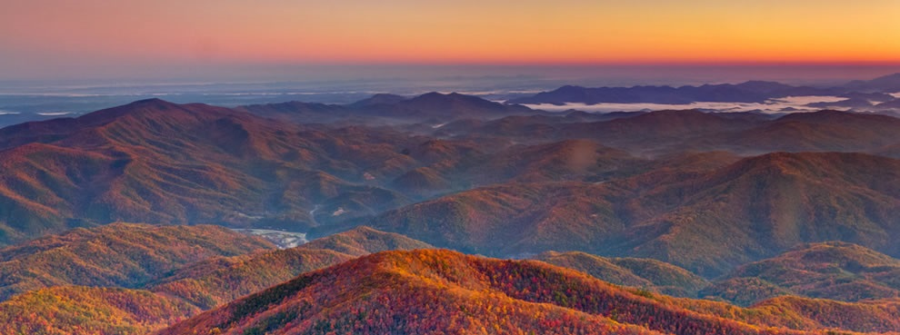

Past Projects
Master Research Projects
- Activity budgets and movements of GPS-collared wolves in the Abruzzo, Lazio and Molise National Park (central Italy)
Dept. of Animal and Human Biology, University of Rome
Luigi BOITANI, Paolo CIUCCI - Demographic study of snake populations in France: deriving conservation measures
CNRS, Moulis (Eco-Ex) and Chizé (CEBC) centres
Jean CLOBERT, Xavier BONNET - Characterisation of Highland water-vole dispersal network within and among metapopulations
School of Biological Sciences, University of Aberdeen
Xavier LAMBIN - Modelling the erosion of sex-biased dispersal during range advance
School of Biological Sciences, University of Aberdeen
Justin TRAVIS
- 2012
7 months - 2011
6 months - 2010
3 months - 2010
6 weeks
Undergraduate Research Projects
- Impacts of nitrogen atmospheric pollution on acid prairie biodiversity (S-W of France)
UMR BIOGECO Bordeaux 1 University
Luigi BOITANI, Paolo CIUCCI - Involvement in the various missions of the IFREMER in Arcachon Bay
IFREMER Arcachon, France
- 2009
3 months - 2004
3 weeks